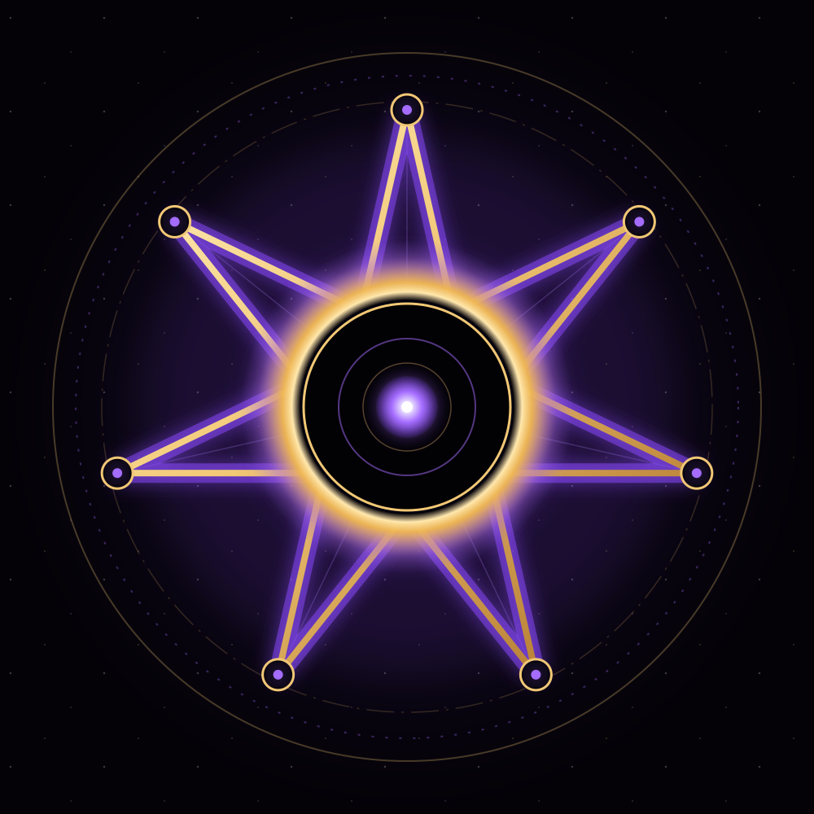

Look at the center. Notice what you see, feel, and assume.
A seven-step reflection
Pause. Notice.
Choose clearly.
A symbolic experience using geometry, optional sound, breathing, and reflection.
BeginCreative reflection only. No external signal is detected.

Interactive reflection
Choose a mode.
Reflection
What remains useful?
Separate fact, interpretation, and next action.
On GitHub Pages, reflections stay in this tab only. Download to keep a copy.
Seven questions
A clearer way to judge what matters.
- 01 · Clarity
What did you directly observe?
- 02 · Evidence
What supports your interpretation?
- 03 · Pattern
What else could explain what repeats?
- 04 · Test
What would change your mind?
- 05 · Care
Does this reduce harm and unnecessary fear?
- 06 · Choice
Can you pause, decline, or choose differently?
- 07 · Action
What small, reversible step comes next?
About the artwork
Designed as symbolic art.
The seven points mirror the seven questions. The eclipse represents uncertainty; the center represents attention. The glyphs are decorative marks created for this artwork.
Symbolic, not factual.
Theta-7 does not verify paranormal, extraterrestrial, medical, or intelligence claims. Do not use it for health, safety, travel, or investigative decisions.
No account, tracking, or data upload. Downloaded copies work offline.